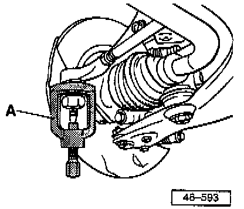
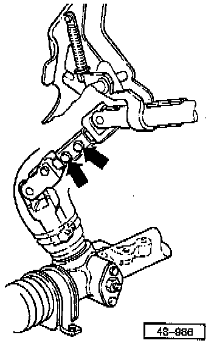
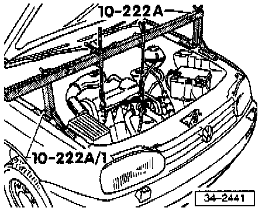
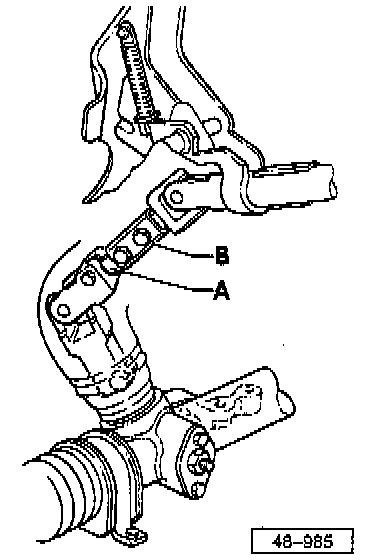

Power Steering Gear, Removing & Installing
Power steering gear, removing and installing
CAUTION: Pay special attention to the rules for cleanliness when working on the power steering.
Thoroughly clean all connections and adjacent areas before disconnecting.
Place parts that have been removed on a clean surface and cover.
Do not use fluffy cloths.
Carefully cover or seal opened components if the repairs cannot be completed immediately.
Only install clean components.
Only unpack replacement parts immediately prior to installation.
Do not use parts which have been stored loose (e.g. in tool box).
When the system is open do not work with compressed air or move the vehicle if it can be avoided.
REMOVAL

Separate tie rods from steering arms.
A - Ball joint separator (commercial type) e.g. Kukko tool 128/2

Remove universal joint shaft bolts (arrows).
Using oil extractor, remove and discard hydraulic oil from reservoir
Use suction device, e.g. Fluid Evacuators Co. Model tool No. EX-1, or equivalent.
If no oil extractor is available, remove suction hose at power steering pump and drain oil.

Support engine/transmission assembly using egine support bridge 10-222A and bracket 10-222A/1
Remove steering gear boot from its seat on steering gear.
Remove subframe bolts.
Lower engine/transmission assembly.
Two halves of universal joint will pull apart
Disconnect hydraulic lines from steering gear and seal with plastic bags and tape.
Seal threaded holes on steering gear with plastic plugs.
Alternatively use plug, Part No.113 301 229 A, banjo bolt, Part No. N 904 674 01 and several 16 mm sealing washers.
Remove steering gear retaining nuts (bolts remain in subframe).
Remove steering gear rearward.
Caution: Part numbers are for reference only. Always check with your parts department for latest information.
Installing
Install in reverse order of removal.
Align front end and check position of steering wheel.

NOTE: When lifting the engine/transmission assembly the lower half -A- of the joint shaft must be guided into the upper half -B- of the joint shaft (2nd technician required).
Coat boot with lubricant, e.g. soft soap, before pulling onto the steering gear.
Tightening Torques
Joint shaft halves 25 Nm (18 ft lbs)
Steering gear 30 Nm (22 ft lbs)
Tie rod end 35 Nm (26 ft lbs)
Subframe front and rear 70 Nm (52 ft lbs) plus additional 1/4 turn (90°)
Rear subframe bracket 65 Nm (48 ft lbs)
Changes to splines on steering gear pinion and steering column universal joint shaft

1. Steering Pinion Shaft
Previous: 36 splines
New: 22 splines
2. Lower Universal Joint Fork
Previous: 36 splines
New: 22 splines
3. Steering Gear
NOTE: Steering gears with 36 splines on the steering pinion are not available as replacement parts. If a 36 spline steering gear is being changed to a 22 spline steering gear, then also install a new universal joint with 22 splines.
Mixed installation is not permissible: e.g. old pinion (36 splines) and new universal joint (22 splines).